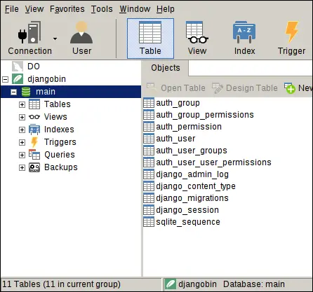
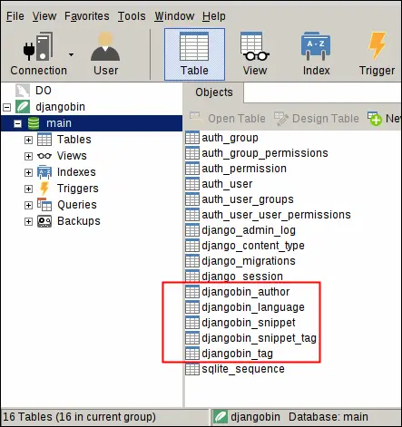

Migrations in Django
Last updated on July 27, 2020
Migration is a way to alter database schema. At the same time, migration also serves as a version control for databases. In Django, the common workflow of working with models is as follows:
- Create or change models in
models.pyfile. - Create migration file.
- Commit changes to the database using the migration file created in step 2.
While in development it is very common to create new models and change existing models. The Django migration system allows us to change database schema as our application evolves. In addition to that, the migration system also keeps track of the changes made to the databases, so that we can move forward or backward in time. If we don't use a migration system then we would have to manually track database changes and then execute raw SQL on the server to commit the changes.
The migration system also really shines when you are working with a team. Let's say you have made some crucial changes to the database and pushed it to the remote server. All your team members need to do is to pull the migration and apply it. That's all. They don't need to execute any SQL manually.
Let's create some migrations.
Checking Models for Error #
Django provides a check subcommand which checks for errors in models.py file.
1 2 | $ ./manage.py check
System check identified no issues (0 silenced).
|
The "System check identified no issues (0 silenced)" indicates that no errors were found. Now we are ready to create our first migration. You should always use the check command to look for errors in your models before creating a migration file.
Creating Migrations #
We use makemigrations subcommand to create migrations. Open terminal and type the following command.
$ ./manage.py makemigrations djangobin
You will see the output like this:
1 2 3 4 5 6 7 | Migrations for 'djangobin':
djangobin/migrations/0001_initial.py
- Create model Author
- Create model Language
- Create model Snippet
- Create model Tag
- Add field tags to snippet
|
In the preceding command, we have specified the name of the app we want to create migrations for i.e djangobin. If we don't specify the app name then Django would create migrations for all installed apps, assuming there are any changes in the models.py file of the respective app since the last time makemigrations has run. In other words, Django will create migrations only when it detects changes in the models.py file. Try running the makemigrations command once again but this time without specifying the name of the app.
1 2 | $ ./manage.py makemigrations
No changes detected
|
Because there are no new changes since the last time we executed makemigrations command, we get "No changes detected".
So what makemigrations command did?
The makemigrations command has created a migration file named 0001_initial.py in the migrations subdirectory of the djangobin app. This migration file reflects the current state of our models. We will use this migration file to update our database. In other words, Django will use migration file to create SQL queries to update the current state of the database, so that it is in sync with models.py. In the next section, we will take a look at the migration file.
Inspecting Migrations #
Open migration file named 0001_initial.py in the migrations subdirectory of the djangobin app. It should look this:
1 2 3 4 5 6 7 8 9 10 11 12 13 14 15 16 17 18 19 20 21 22 23 24 25 26 27 28 29 30 31 32 33 34 35 36 37 38 39 40 41 42 43 44 45 46 47 48 49 50 51 52 53 54 55 56 57 58 59 60 61 62 63 64 65 66 67 68 69 70 71 72 73 74 75 76 77 78 79 | # -*- coding: utf-8 -*-
# Generated by Django 1.11 on 2018-05-25 06:14
from __future__ import unicode_literals
from django.db import migrations, models
import django.db.models.deletion
class Migration(migrations.Migration):
initial = True
dependencies = [
]
operations = [
migrations.CreateModel(
name='Author',
fields=[
('id', models.AutoField(auto_created=True, primary_key=True, serialize=False, verbose_name='ID')),
('name', models.CharField(max_length=100)),
('email', models.EmailField(max_length=254, unique=True)),
('active', models.BooleanField(default=False)),
('created_on', models.DateTimeField(auto_now_add=True)),
('last_logged_in', models.DateTimeField(auto_now=True)),
],
),
migrations.CreateModel(
name='Language',
fields=[
('id', models.AutoField(auto_created=True, primary_key=True, serialize=False, verbose_name='ID')),
('name', models.CharField(max_length=100)),
('lang_code', models.CharField(max_length=100, unique=True)),
('slug', models.SlugField(max_length=100, unique=True)),
('mime', models.CharField(help_text='MIME to use when sending snippet as file.', max_length=100)),
('file_extension', models.CharField(max_length=10)),
('created_on', models.DateTimeField(auto_now_add=True)),
('updated_on', models.DateTimeField(auto_now=True)),
],
options={
'ordering': ['name'],
},
),
migrations.CreateModel(
name='Snippet',
fields=[
('id', models.AutoField(auto_created=True, primary_key=True, serialize=False, verbose_name='ID')),
('title', models.CharField(blank=True, max_length=200)),
('original_code', models.TextField()),
('highlighted_code', models.TextField()),
('expiration', models.CharField(choices=[('never', 'Never'), ('1 week', '1 week'), ('1 month', '1 month'), ('6 month', '6 month'), ('1 year', '1 year')], max_length=10)),
('exposure', models.CharField(choices=[('public', 'Public'), ('unlisted', 'Unlisted'), ('private', 'Private')], max_length=10)),
('hits', models.IntegerField(default=0)),
('slug', models.CharField(max_length=100)),
('created_on', models.DateTimeField(auto_now_add=True)),
('author', models.ForeignKey(on_delete=django.db.models.deletion.CASCADE, to='djangobin.Author')),
('language', models.ForeignKey(on_delete=django.db.models.deletion.CASCADE, to='djangobin.Language')),
],
options={
'ordering': ['-created_on'],
},
),
migrations.CreateModel(
name='Tag',
fields=[
('id', models.AutoField(auto_created=True, primary_key=True, serialize=False, verbose_name='ID')),
('name', models.CharField(max_length=200, unique=True)),
('slug', models.CharField(max_length=200, unique=True)),
],
options={
'ordering': ['name'],
},
),
migrations.AddField(
model_name='snippet',
name='tags',
field=models.ManyToManyField(to='djangobin.Tag'),
),
]
|
As you can see the migration file consists of a regular Python class which inherits from migrations.Migration. In line 11, initial=True indicates that this is our first migration for the djangobin app. The dependencies attribute defines which migrations should be run before this migration. Because this is our first migration for the app, it is set to empty list. Django uses dependencies attribute of migration file to determine the order in which migration file should be run. Let's say we have created another migration file after making some changes to the Language model in models.py file. Then the dependencies attribute for the second migration file will look like this:
1 2 3 4 5 | class Migration(migrations.Migration):
dependencies = [
('djangobin', '0001_initial'),
]
|
In this case, dependencies attribute refers to the 0001_initial migration of the djangobin app. It means that Django will run the migration 0001_initial before running the second migration.
Finally, in line 16, we have operations attribute. It defines a list of operations to run for the current migration, in order. Now you know how migration file is structured. Let's take a look at the SQL command that it would generate to commit the changes.
Inspecting SQL #
You can view the actual SQL queries that 0001_initial.py would generate to alter the current state of the database by using the sqlmigrate command. The sqlmigrate requires two arguments, name of the app and migration name. You don't need to pass full name of the migration file, starting few characters are enough.
1 2 3 4 5 6 7 8 9 10 11 12 13 14 15 16 17 18 19 20 21 22 23 24 25 26 27 28 | $ ./manage.py sqlmigrate djangobin 0001
BEGIN;
--
-- Create model Author
--
CREATE TABLE "djangobin_author" ("id" integer NOT NULL PRIMARY KEY AUTOINCREMENT, "name" varchar(100) NOT NULL UNIQUE, "email" varchar(254) NOT NULL UNIQUE, "active" bool NOT NULL, "created_on" datetime NOT NULL, "last_logged_in" datetime NOT NULL);
--
-- Create model Language
--
CREATE TABLE "djangobin_language" ("id" integer NOT NULL PRIMARY KEY AUTOINCREMENT, "name" varchar(100) NOT NULL, "lang_code" varchar(100) NOT NULL UNIQUE, "slug" varchar(100) NOT NULL UNIQUE, "mime" varchar(100) NOT NULL, "created_on" datetime NOT NULL, "updated_on" datetime NOT NULL);
--
-- Create model Snippet
--
CREATE TABLE "djangobin_snippet" ("id" integer NOT NULL PRIMARY KEY AUTOINCREMENT, "title" varchar(200) NOT NULL, "code" text NOT NULL, "html_code" text NOT NULL, "expiration" varchar(10) NOT NULL, "exposure" varchar(10) NOT NULL, "hits" integer NOT NULL, "slug" varchar(100) NOT NULL, "created_on" datetime NOT NULL, "author_id" integer NOT NULL REFERENCES "djangobin_author" ("id"), "language_id" integer NOT NULL REFERENCES "djangobin_language" ("id"));
--
-- Create model Tag
--
CREATE TABLE "djangobin_tag" ("id" integer NOT NULL PRIMARY KEY AUTOINCREMENT, "name" varchar(200) NOT NULL, "slug" varchar(200) NOT NULL);
--
-- Add field tag to snippet
--
CREATE TABLE "djangobin_snippet_tag" ("id" integer NOT NULL PRIMARY KEY AUTOINCREMENT, "snippet_id" integer NOT NULL REFERENCES "djangobin_snippet" ("id"), "tag_id" integer NOT NULL REFERENCES "djangobin_tag" ("id"));
CREATE INDEX "djangobin_snippet_author_id_683799a5" ON "djangobin_snippet" ("author_id");
CREATE INDEX "djangobin_snippet_language_id_f4016a66" ON "djangobin_snippet" ("language_id");
CREATE UNIQUE INDEX "djangobin_snippet_tag_snippet_id_tag_id_c040c9fb_uniq" ON "djangobin_snippet_tag" ("snippet_id", "tag_id");
CREATE INDEX "djangobin_snippet_tag_snippet_id_c40481f2" ON "djangobin_snippet_tag" ("snippet_id");
CREATE INDEX "djangobin_snippet_tag_tag_id_e054d4df" ON "djangobin_snippet_tag" ("tag_id");
COMMIT;
|
Lines starting with -- are comments, everything else is plain old SQL. Note that sqlmigrate doesn't execute the generated SQL against the database, it just prints the SQL that Django would use to alter the database schema.
Keeping Track of migrations #
The showmigrations subcommand shows a list of applied and unapplied migrations under each installed app. Recall that we have already used this command several times in the chapter Creating Django project. Let's execute it again.
1 2 3 4 5 6 7 8 9 10 11 12 13 14 15 16 17 18 19 20 | $ ./manage.py showmigrations
admin
[X] 0001_initial
[X] 0002_logentry_remove_auto_add
auth
[X] 0001_initial
[X] 0002_alter_permission_name_max_length
[X] 0003_alter_user_email_max_length
[X] 0004_alter_user_username_opts
[X] 0005_alter_user_last_login_null
[X] 0006_require_contenttypes_0002
[X] 0007_alter_validators_add_error_messages
[X] 0008_alter_user_username_max_length
contenttypes
[X] 0001_initial
[X] 0002_remove_content_type_name
djangobin
[ ] 0001_initial
sessions
[X] 0001_initial
|
All the migrations which have [X] in front of them are applied to the database. The only unapplied migration is 0001_initial in the djangobin app.
Committing Changes #
To apply the changes outlined by the migrations we use the migrate subcommand. The behavior of migrate subcommand depends upon how many arguments are passed to it. If you run migrate subcommand without any argument it will apply all the unapplied migrations from all the installed apps. If you pass app name as an argument, migrate will run the unapplied migrations only from the specified app.
We can also use migrate to unapply migrations. To do so, specify app name followed by migration name you want to migrate to. We will see an example of this in the next section.
But before we run migrate command. Let's take a look at the current state of our database.

Right now, we have 11 tables in our database. Okay, now let's run the migrate and see what happens.
1 2 3 4 5 | $ ./manage.py migrate djangobin
Operations to perform:
Apply all migrations: djangobin
Running migrations:
Applying djangobin.0001_initial... OK
|
If you don't already have a database then migrate command will create an SQLite database named db.sqite3 in the project's root directory i.e djangobin/django_project.
On the other hand, if you already have a database then Django will modify the existing database so that it is in sync with our models.
Let's refresh the SQLite database and see how many tables are there now.

We now have 16 tables, the migrate command has created 5 new tables for us. Wait! why 5 ? we have created only 4 new models right? Why one extra?
Django has created an extra table (djangobin_snippet_tags) to manage a many-to-many relationship between Snippet and Tag models. This is not specific to Django, in fact, this is how the database works.
All the tables which start with "djangobin_" belongs to the djangobin app. Here is the rundown of each table:
| Table | Description |
|---|---|
djangobin_author |
to store authors. |
djangobin_language |
to store languages. |
djangobin_snippet |
to store code snippets. |
djangobin_tag |
to store tags. |
djangobin_snippet_tags |
to manage the many-to-many relationship between Snippet and Tag models. In database jargon, this table is known as Junction table. |
Once More Migrate #
Just to make sure you understand migrations completely. We will demonstrate it one more time. In this section, we are going to rename one of the fields of the Snippet model from hits to visits and then we will revert the changes using the migrate command.
Open models.py inside the djangobin app and rename the hits field of the Snippet model to visits as follows:
djangobin/django_project/djangobin/models.py
1 2 3 4 5 6 7 8 9 10 11 12 13 14 15 16 17 18 19 | #...
class Snippet(models.Model):
title = models.CharField(max_length=200, blank=True)
original_code = models.TextField()
highlighted_code = models.TextField(blank=True)
expiration = models.CharField(max_length=10, choices=Pref.expiration_choices)
exposure = models.CharField(max_length=10, choices=Pref.exposure_choices)
visits = models.IntegerField(default=0)
slug = models.SlugField()
created_on = models.DateTimeField(auto_now_add=True)
language = models.ForeignKey(Language, on_delete=models.CASCADE)
author = models.ForeignKey(Author, on_delete=models.CASCADE)
tags = models.ManyToManyField('Tag')
#...
|
Step 1 - Check for errors in the model using the check command.
1 2 | $ ./manage.py check djangobin
System check identified no issues (0 silenced).
|
We don't have any errors in models.py file. Let's create our migration file now.
Step 2 - Create migration file using makemigrations command.
1 2 3 4 5 | $ ./manage.py makemigrations djangobin
Did you rename snippet.created_on to snippet.publication_date (a DateTimeField)? [y/N] y
Migrations for 'djangobin':
djangobin/migrations/0002_auto_20180323_0623.py
- Rename field created_on on snippet to publication_date
|
After executing makemigrations command Django will prompt you to verify the changes. Press Y or y to confirm. This will create a new migration file inside the migrations directory of the djangobin app.
Step 3 (optional) - View the SQL query that Django would use to update the database using the sqlmigrate command.
1 2 3 4 5 6 7 8 9 10 11 12 | $ ./manage.py sqlmigrate djangobin 0002
BEGIN;
--
-- Rename field hits on snippet to visits
--
ALTER TABLE "djangobin_snippet" RENAME TO "djangobin_snippet__old";
CREATE TABLE "djangobin_snippet" ("id" integer NOT NULL PRIMARY KEY AUTOINCREMENT, "visits" integer NOT NULL, "title" varchar(200) NOT NULL, "original_code" text NOT NULL, "highlighted_code" text NOT NULL, "expiration" varchar(10) NOT NULL, "exposure" varchar(10) NOT NULL, "slug" varchar(100) NOT NULL, "created_on" datetime NOT NULL, "author_id" integer NOT NULL REFERENCES "djangobin_author" ("id"), "language_id" integer NOT NULL REFERENCES "djangobin_language" ("id"));
INSERT INTO "djangobin_snippet" ("slug", "id", "expiration", "visits", "author_id", "title", "original_code", "created_on", "exposure", "highlighted_code", "language_id") SELECT "slug", "id", "expiration", "hits", "author_id", "title", "original_code", "created_on", "exposure", "highlighted_code", "language_id" FROM "djangobin_snippet__old";
DROP TABLE "djangobin_snippet__old";
CREATE INDEX "djangobin_snippet_author_id_683799a5" ON "djangobin_snippet" ("author_id");
CREATE INDEX "djangobin_snippet_language_id_f4016a66" ON "djangobin_snippet" ("language_id");
COMMIT;
|
Well, that's a lot of code for a single field rename. If you were not using migrations then you would have to write all this code by yourself. Thanks to migrations, you are in luck.
Step 4 (optional) - To view the applied and unapplied migrations use showmigrations command:
1 2 3 4 | $ ./manage.py showmigrations djangobin
djangobin
[X] 0001_initial
[ ] 0002_auto_20180323_0623
|
As you can see migration 0002_auto_20180323_0623 is currently unapplied.
Step 5 - Finally, commit the changes stored in the migration file to the database using the migrate command.
1 2 3 4 5 | $ ./manage.py migrate djangobin
Operations to perform:
Apply all migrations: djangobin
Running migrations:
Applying djangobin.0002_auto_20180323_0623... OK
|
Rolling Back Migrations #
Let's say for some reason we don't like the change we have made to the Snippet model. There are two ways to revert the changes we have made:
- The first method is to change the name of the field from
visitstohitsinmodels.py, create migration file and then commit the changes. - The second method is quick and easy. Instead of changing the models and creating a new migration just use
migratecommand and specify the app name and name of migration file you want to migrate to.
You have already seen how to create a migration and commit changes to the database, consequently, we will go with the second method.
In this case, app name is djangobin and the name of the migration file we want to migrate to starts with 0001. So, to revert the changes execute the following command.
1 2 3 4 5 6 | $ ./manage.py migrate djangobin 0001
Operations to perform:
Target specific migration: 0001_initial, from djangobin
Running migrations:
Rendering model states... DONE
Unapplying djangobin.0002_auto_20180323_0623... OK
|
At this point, you could again apply 0002_auto_20180323_0623 migration. By typing the following command.
$ ./manage.py migrate djangobin 0002
However, in this case, we are sure that we don't want to ever come back to
0002_auto_20180323_0623 migration. So it is best to delete it from the migrations directory.
After that, open models.py file and rename the visits field of the Snippet model to hits again.
You are probably getting hang of this now.
When to Create Migrations #
Django detects changes only when you add, modify or delete model fields or Meta class only. Adding, modifying or deleting model methods are not considered as changes. You can test this fact by adding an arbitrary method to any model class and running the makemigrations command.
1 2 | $ ./manage.py makemigrations
No changes detected
|
Hopefully, you should now have a better understanding of migrations in general and how they are used in Django. If you still have some confusion I suggest you re-read this chapter once more.
Load Comments